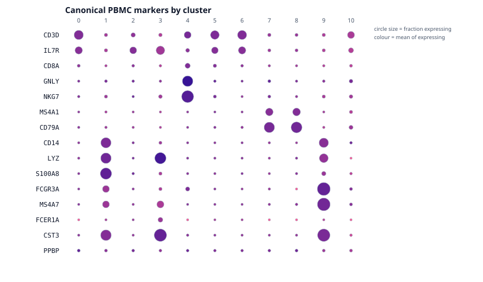
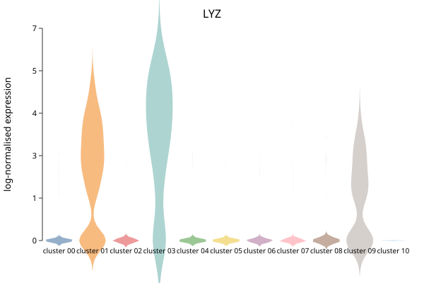
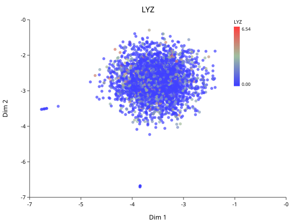

Markers and Annotation
Follows HBC lessons 12 (Seurat cheatsheet) and 13 (Marker identification).
This is the chapter the whole book exists for. Everything before it is mechanical; this is where a numbered cluster becomes a cell type.
The panel view
The fastest way to annotate PBMCs is to ask a known marker panel where it lands.
import "singlecell" as sc
let obj = sc.load("ctrl_raw")
|> sc.filter_genes(3) |> sc.filter_cells(250, 100000, 20.0)
|> sc.normalize() |> sc.variable_genes(2000) |> sc.run_pca(30)
|> sc.neighbors(15) |> sc.cluster_leiden(15, 0.5)
let panel = ["CD3D","IL7R","CD8A","GNLY","NKG7","MS4A1","CD79A",
"CD14","LYZ","S100A8","FCGR3A","MS4A7","FCER1A","CST3","PPBP"]
write_text("dotplot.svg",
sc.expr_dotplot(obj, panel, "Canonical PBMC markers by cluster"))

Read it and the annotation falls out:
| Cluster | Markers | Cell type |
|---|---|---|
| 0, 5, 6 | CD3D, IL7R | CD4 T cells |
| 2, 10 | CD3D, IL7R (weaker) | T cells |
| 4 | CD8A, GNLY, NKG7 | NK / cytotoxic |
| 7, 8 | MS4A1, CD79A | B cells |
| 1 | CD14, LYZ, S100A8 | CD14 monocytes |
| 9 | FCGR3A, MS4A7 | CD16 monocytes |
| 3 | LYZ, CST3, FCER1A | dendritic cells |
Now go back and look at the UMAP. Clusters 1 and 9 sit together — both monocytes. Clusters 7 and 8 sit together — both B cells. Clusters 0, 2, 5, 6 form the central mass with 4 beside them — T cells with NK adjacent. The layout recovered the lineage relationships without being told them, which is the strongest evidence available that the whole pipeline is working.
Why the dot plot and not a violin
The dot plot encodes two quantities at once — dot size is the fraction of cells detecting the gene, dot colour is mean expression among those cells — and that pairing is exactly what separates a real marker from an artifact.
A large pale dot means “expressed in most cells of this cluster, weakly”. A small intense dot means “a few cells, strongly”, and usually means be suspicious.
A violin hides this. Two clusters with identical violins can differ completely in what fraction of their cells express the gene at all:
import "singlecell" as sc
let obj = sc.load("ctrl_raw")
|> sc.filter_genes(3) |> sc.filter_cells(250, 100000, 20.0)
|> sc.normalize() |> sc.variable_genes(2000) |> sc.run_pca(30)
|> sc.neighbors(15) |> sc.cluster_leiden(15, 0.5)
write_text("violin-LYZ.svg", sc.plot_violin(obj, "LYZ"))
write_text("feature-LYZ.svg", sc.plot_feature(obj, "LYZ"))


LYZ is high in clusters 1, 3 and 9 and near zero elsewhere — the monocytes and dendritic cells, and nothing else. The feature plot says the same thing spatially.
Finding markers you did not know to look for
The panel above assumes you already know PBMC biology. When you do not:
import "singlecell" as sc
let obj = sc.load("ctrl_raw")
|> sc.filter_genes(3) |> sc.filter_cells(250, 100000, 20.0)
|> sc.normalize() |> sc.variable_genes(2000) |> sc.run_pca(30)
|> sc.neighbors(15) |> sc.cluster_leiden(15, 0.5)
let markers = sc.marker_table(obj, 1, 0)
println(head(markers, 8))
marker_table(obj, a, b) compares two clusters. The columns:
| Column | Meaning |
|---|---|
log2fc | Log2 fold change between the groups |
pct_a, pct_b | Fraction of cells in each group detecting the gene |
pvalue | Raw test p-value |
padj | After multiple-testing correction |
Read pct before you read p
The p-values here will be tiny — often reported as zero. Do not take them seriously as evidence.
The test asks “could these two groups have the same expression?”, and you already know the answer is no, because you defined the groups by clustering on this same expression data. The clustering separated the cells; the test then confirms they are separated. That is circular, and it is why marker p-values are best read as a ranking device rather than as inference. A published p-value of 10⁻³⁰⁰ from a marker table means “this gene ranked high”, not “this finding is certain”.
The columns carrying real information are pct_a and pct_b. A gene detected in
95% of cluster cells and 5% of the rest is a usable marker regardless of its
p-value. A gene with a huge fold change detected in 10% of the cluster is not —
it is a few cells with high counts, and it will not replicate.
Rank by fold change, filter by detection rate, use the p-value only to break ties.
Markers against everything else
Comparing one cluster to one other answers a narrow question. Usually you want each cluster against all remaining cells:
import "singlecell" as sc
let obj = sc.load("ctrl_raw")
|> sc.filter_genes(3) |> sc.filter_cells(250, 100000, 20.0)
|> sc.normalize() |> sc.variable_genes(2000) |> sc.run_pca(30)
|> sc.neighbors(15) |> sc.cluster_leiden(15, 0.5)
write_text("markers.svg", sc.plot_markers(obj, 5))
The underlying find_all_markers builtin runs a Mann-Whitney U test per gene per
cluster and applies one Benjamini-Hochberg correction across the whole table,
not per cluster. Correcting within each cluster separately would understate the
multiple-testing burden, since the family is every test you ran.
From markers to cell types
This step is manual, and there is no honest way around it. You match marker genes against known biology — literature, marker databases, or a reference atlas — and assign names.
Three cautions the course is right to stress:
A cluster without a clean marker set may not be a cell type. It may be doublets, stressed cells, or an over-split fragment of a real population. Cluster 10 above has 32 cells; look at its markers before giving it a name.
Markers are context-dependent. A gene marking a population in blood may mark something else in tumour. Markers from a PBMC atlas do not transfer unexamined to solid tissue — and this dataset is the PBMC atlas case, which is why it works so cleanly here.
Record your reasoning. “Cluster 1 = monocytes” is not reproducible. “Cluster 1: CD14+ LYZ+ S100A8+, FCGR3A−, 3714 cells — classical CD14 monocytes” is. Six months later you will not remember, and a reviewer cannot check the first version at all.
The Seurat verbs, translated
For readers coming from the course’s R:
Read this as “the step that occupies the same slot”, not “the same computation”. Several of these are approximations, and the ones that are carry a note. A table of bare equivalences would be easier to read and would mislead you about exactly the things that make numbers differ.
| Seurat | BioLang | |
|---|---|---|
CreateSeuratObject | sc.load / sc.from_matrix | |
PercentageFeatureSet + subset | sc.qc → sc.filter_cells | filter_cells has no UMI floor or complexity term — see Quality Control |
NormalizeData | sc.normalize | equivalent |
SCTransform | sc.sctransform | independent implementation of the same method — see below |
FindVariableFeatures | sc.variable_genes | dispersion, unbinned; Seurat’s vst bins by mean first. Under SCTransform, use sc.sctransform(obj, n) instead |
RunPCA | sc.run_pca | subspace iteration; Seurat uses irlba |
ElbowPlot | sc.plot_elbow | |
FindNeighbors | sc.neighbors | SNN with Jaccard weights, same as Seurat. Neighbour search is exact here, approximate (Annoy) there |
FindClusters | sc.cluster_louvain | Louvain with 10 restarts, matching algorithm = 1, n.start = 10. sc.cluster_leiden is the better algorithm but not the one the course ran |
RunUMAP + DimPlot | sc.plot_umap | |
FindMarkers | sc.marker_table | |
FindAllMarkers | find_all_markers | |
FeaturePlot | sc.plot_feature | |
VlnPlot | sc.plot_violin | |
DotPlot | sc.expr_dotplot | |
RunHarmony | sc.harmony | not sc.integrate, which only centres each batch per gene |
merge | sc.merge |
How close sc.sctransform is
It implements the same method: a negative binomial per gene, overdispersion
estimated by maximum likelihood, then regularized by smoothing those estimates
across genes of similar expression. The regularization is the point of the
method and what the paper’s title refers to. Residuals are clipped at
sqrt(n_cells/30), the published default.
It is an independent implementation written from Hafemeister & Satija 2019 and Choudhary & Satija 2022, not a translation — the reference is GPL-3 and BioLang is MIT.
An earlier version of this page said sc.sctransform used a fixed
overdispersion of 100 for every gene. That was true when written. It shared
the residual formula with the method and none of the regularization, which is
most of it.
One known divergence remains: bandwidth for the smoothing uses Silverman’s rule where the reference uses the Sheather-Jones plug-in, so the smoothed overdispersion curve differs slightly.
Next
Everything above in one script: The Whole Workflow.